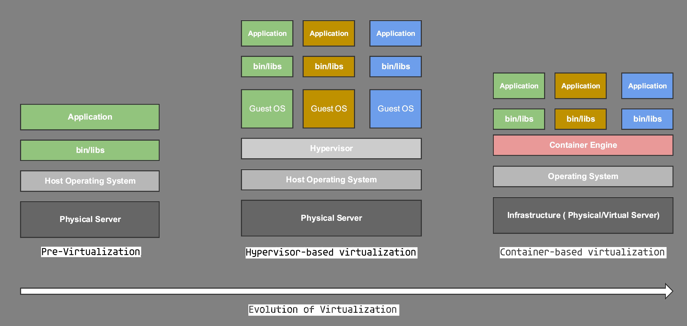
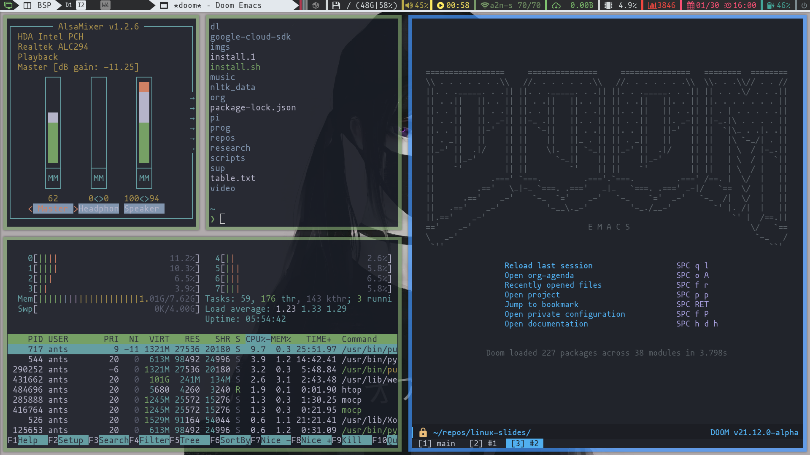
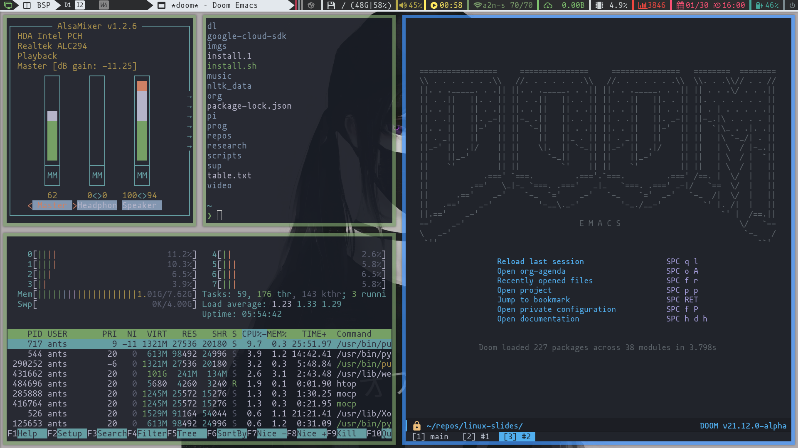

What we'll cover:
- intro to
- the base: choosing a distro
- window managers
- terminal emulators
- my personal config on
Intro to
An operating system (OS) is system software that manages computer hardware, software resources, and provides common services for computer programs.
Wikipedia
From physical devices to full virtualization.
A kernel connects the application software to the hardware of a computer.

- manages RAM access for programs
- determines hardware resources access
- sets CPU's operating states
- organizes non-volatile data with file systems
the base: choosing a distro
Private and closed-source distros and DE.


Free and open-source distros and DE.


But a DE is not required...


Coz it can be riced a ton!
 


It is up to you to find the one you love!
Or to catch them all...
window managers
Different kinds of WMs:
- purely floating WMs
- pseudo-tilling WMs
- tilling WMs
We'll see during hands on what a tilling WM looks like.
terminal emulators
These manage the windows you open to write and run commands!
All sorts of terminal emulators.
my personal config
Looks familiar? ...
The main stuff I run:
- archlinux as a base
- Qtile tilling WM
- Kitty terminal Emulator
- bash shell
- neovim and emacs as text editors and more
And many more!
Scripts , music and video players , shells , many other commands and other WMs and terminal emulators.